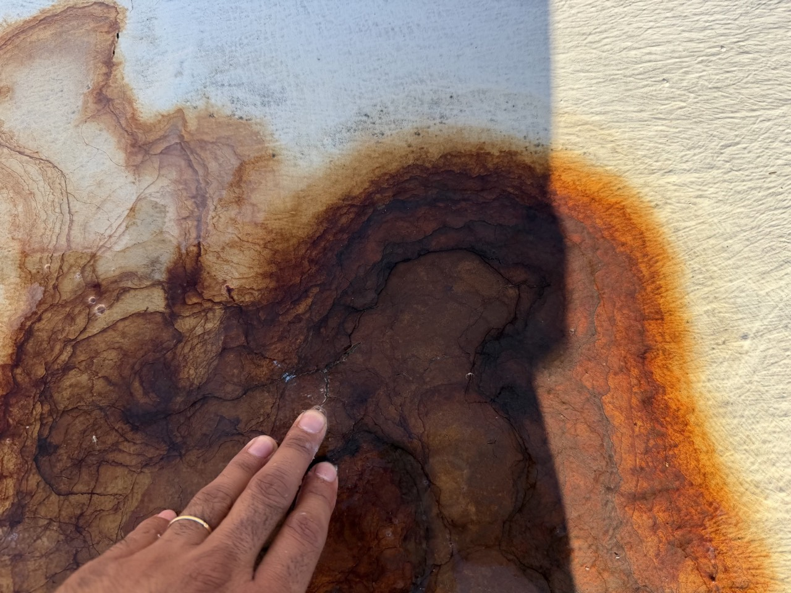
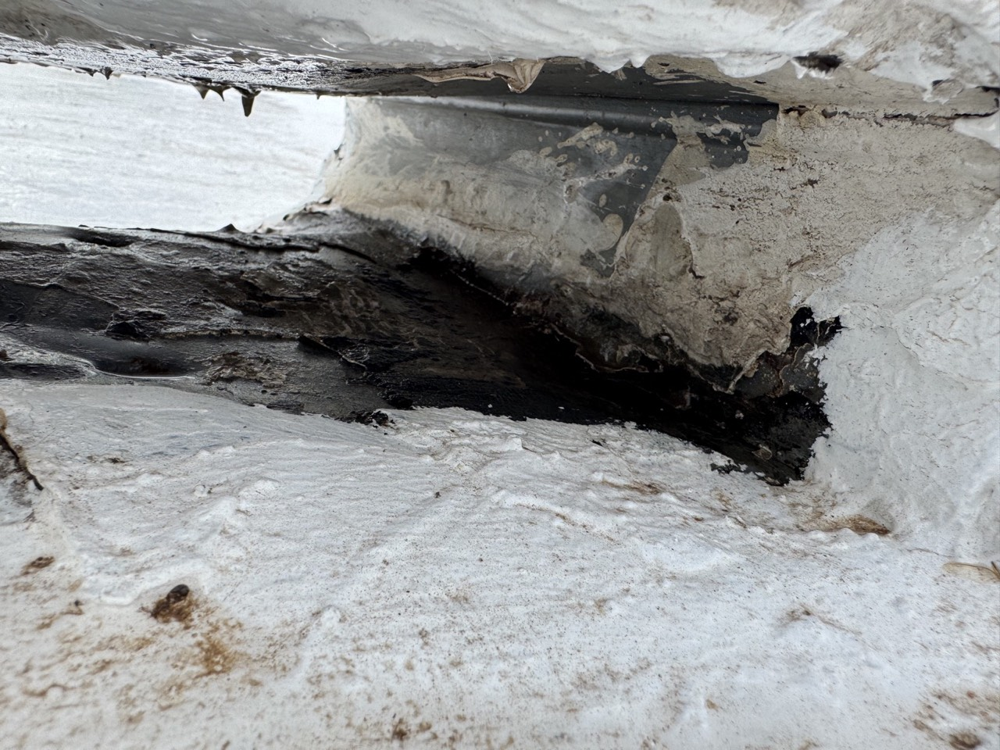
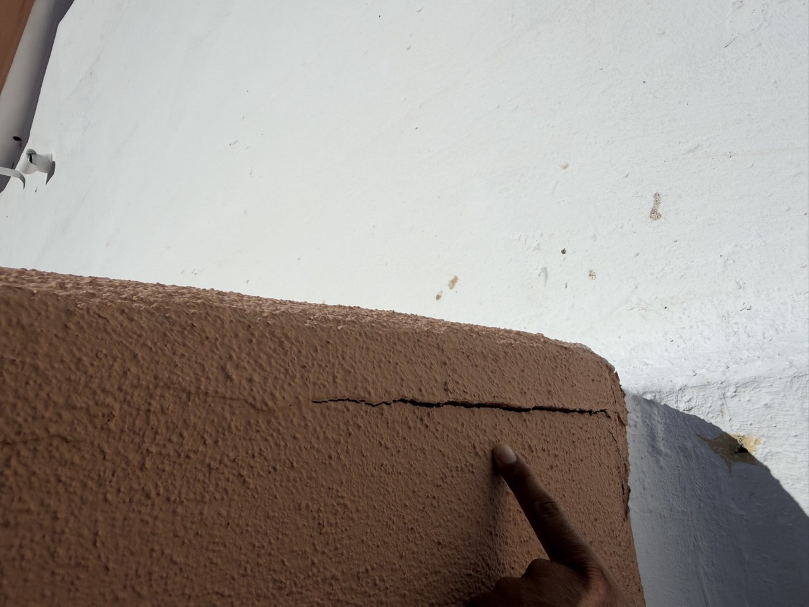
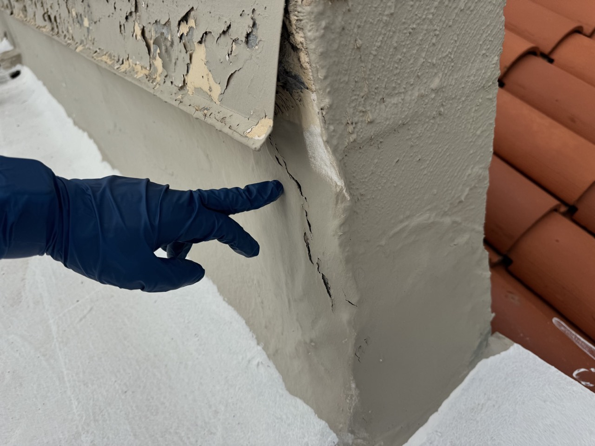
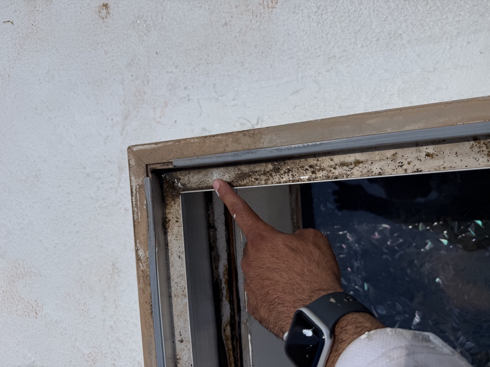
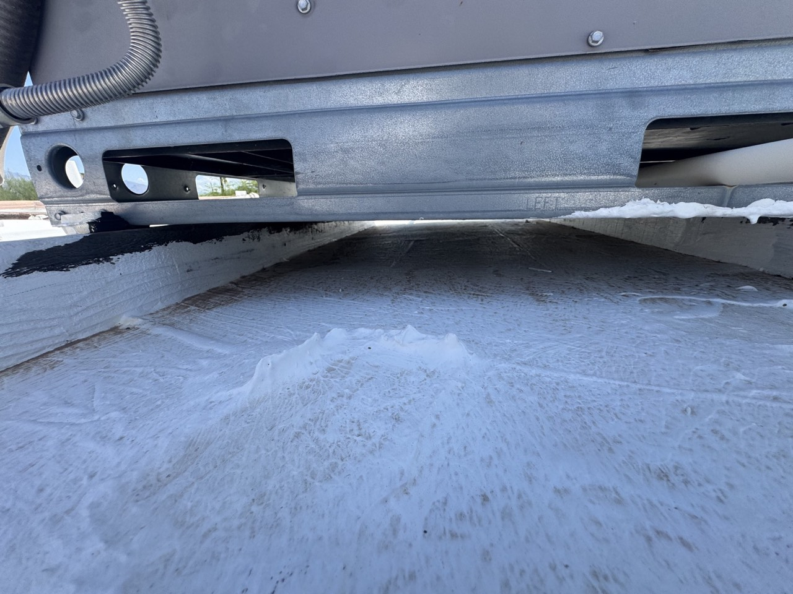

Plain-English answers to the roofing questions Tucson homeowners actually ask — how we diagnose a leak, what ponding water does and doesn't mean, why scuppers and wall transitions cause more problems than the open roof field, and how we decide between a repair and something bigger.
Every recommendation on this site — and every recommendation we make in person — starts with understanding what's actually happening on your roof, not with deciding what to sell. That's slower than handing out a generic quote, but it's the only way we know how to give you a scope of work that actually matches your roof's condition.
We look at what's causing a problem before recommending how to fix it. An interior leak, a damaged tile, or a ponding area can each have more than one possible cause, and the right fix depends on which one actually applies to your roof.
A repair can be entirely appropriate when it addresses the real cause and can reasonably be expected to hold. We don't default to recommending replacement when a responsible repair makes sense — and we won't recommend a repair we don't expect to actually solve the problem, either.
A temporary repair buys time and isn't meant to be permanent. A maintenance repair addresses normal wear as part of ongoing upkeep. A substantial repair addresses a real underlying problem in a specific area. Replacement addresses a roofing system that's beyond what any of the above can responsibly fix. We'll tell you which one we're actually proposing, not leave it vague.
You should understand why we're recommending what we're recommending — what we found, what we didn't find, and the limitations of a proposed repair. If we're not sure about something, we'll say so instead of guessing.
Everything in this Knowledge Center is general and educational — it's meant to help you understand common roofing issues and ask better questions, not to diagnose your specific roof. Roofing conditions vary by property, and whether a specific repair will work on your roof can only be confirmed by a physical, on-site inspection. See our Terms & Conditions for more on how to use this information. If you're seeing a specific problem right now, the fastest way to get a real answer is to request an inspection.
Jump to the section that matches what you're dealing with. Each one covers what we typically look at and the questions we hear most from Tucson homeowners.
Why the water stain inside your house might not be directly below where water is entering the roof.
02What causes standing water on a flat roof, and when it is and isn't something to be concerned about.
03What a coating actually does, when a coating repair makes sense, and the honest answer on DIY silicone.
04Why scuppers, gutters, and debris need to be looked at as one drainage system, not separately.
05What we check when a leak shows up near a parapet or exterior wall instead of the open roof field.
06Skylights, solar, HVAC, cables, and condensation lines — what's ours to evaluate, and what isn't.
07How we decide, and when a repair stops being the responsible recommendation.
Water follows paths, not straight lines. It doesn't always enter a roof at the same point it shows up inside — it can travel along the underside of decking, run down a rafter or truss, follow a plane of underlayment, or move along a wall before it ever becomes visible as a stain. That's why we don't just patch whatever's directly above a water stain and call it fixed.
Because water follows paths, not straight lines. A proper diagnosis traces the possible routes water could have taken to get there — roof slope and drainage direction, areas uphill from the interior stain, nearby scuppers and penetrations, pipe boots, crickets and saddles, parapet walls, flashing, nearby stucco condition, previous repairs, and rooftop equipment that could be redirecting water. We won't tell you a leak is fixed just because we sealed the ceiling directly above the stain — if the real entry point is somewhere else, that repair won't hold.
It starts with understanding the roof's slope and drainage path, then working uphill from where the leak shows up inside — checking penetrations, flashing, seams, and any nearby drainage features before assuming the closest visible damage is the cause. On a complex roof, this can take real time to do properly, which is part of why we don't guess.
Intermittent leaks — ones that only show up during certain storm directions, wind speeds, or after enough rain has fallen to overwhelm a marginal drainage point — don't always reproduce on demand. Multiple previous repairs in the same area can also mask the real entry point until earlier patches are opened up and inspected.
Low-slope and flat roofs are built with some tolerance for standing water after rain. Ponding water is a real question worth looking into — not an automatic emergency — and the right response depends on what's causing it, not just that it's there.
Size and depth of the ponding area. How long water remains after rainfall. Whether the area sits in a high-foot-traffic location. Whether it's near a scupper, drain, cricket, transition, or penetration. Whether debris is accumulating there. Whether a previous repair appears to be redirecting water into that spot. Whether the deck underneath feels structurally solid or shows visible deflection. Whether the surrounding roofing system is otherwise deteriorating.
Standing water that's still there well after a storm has passed, that keeps returning with a growing footprint, or that's paired with visible deflection or a soft feel underfoot is worth a direct look. A shallow area that clears within a reasonable window after most rain is a different situation from a deep, persistent, growing one — we're not going to publish a fixed number of hours or days here, since how long counts as "too long" depends on the roofing system and conditions.
Usually more than one thing at once. Common causes include the roof's original drainage design, a drain outlet or scupper positioned higher than the surrounding roof slope, a raised or distorted drip edge, structural deflection in the deck below, previous repairs that changed how water moves across the roof, debris accumulation, blocked scuppers or gutters, water directed onto the roof from another source, or rooftop equipment and its supports interfering with the drainage path. Which of these applies to a specific roof is something an inspection has to determine.
Often, yes — moderate or even larger ponding areas can sometimes be addressed without a full roof replacement, as long as the underlying structure is sound. Depending on the cause, that can mean a drainage correction, carefully designed leveling or fill work, appropriate insulation or other compatible material, or reinforcement in specific high-stress or high-water-traffic areas. If the roof deck is visibly or significantly deflecting, that's a different situation — see Repair vs. Replacement below.
Yes, if it's done without understanding where the water is actually supposed to go. Raising one low spot without addressing the roof's overall drainage path can simply push the ponding to a new low spot nearby instead of resolving it. This is also why fabric reinforcement isn't automatically the correct fix for every ponding area — it's a useful tool in the right high-stress location, but using it without understanding the drainage first can create the same kind of new problem. Even a prior repair can cause this: a heavy patch applied without accounting for drainage can itself become a raised obstruction that redirects water somewhere new.
Our Roof Coatings page covers our full process. The questions below focus on when a coating repair is the right call, and whether applying one yourself is really as simple as it looks.

Severely deteriorated, worn roof coating

Roof coating peeling back to reveal the membrane beneath it
When the existing roof substrate is sound and the coating — and any reinforcement — can be matched to what's actually causing the problem, not applied as a generic fix. In some high-stress or high-water-traffic areas, that can include a reinforced coating detail, but that reinforcement is one tool we reach for when it's appropriate for the specific area, not something applied automatically to every repair. A coating repair applied without first understanding why the original area failed, or without addressing drainage, can end up just moving or masking the problem rather than solving it.
The visible surface of a roof isn't always the only thing keeping water out. Depending on the roofing system — tile, built-up roofing, modified bitumen, or a coated flat roof — there can be multiple layers doing different jobs, and the coating or top layer you see is often one part of that system, not the whole waterproofing story. See our Roof Coatings and Modified Bitumen & Flat Roofing pages for the specifics of each.
Both are coating systems used on appropriate existing roofs, but they're different chemistries with different strengths, application requirements, and typical price points. Which one is appropriate for a given roof depends on the existing substrate, moisture exposure, ponding conditions, and manufacturer compatibility requirements, which is why we evaluate the specific roof rather than defaulting to one product.
Silicone can be an excellent roofing material when it's appropriate for the roofing system and installed correctly — that's not in question. What tends to go wrong isn't the product, it's everything around it: compatibility with what's already on the roof, surface cleaning and preparation, adhesion, drainage and ponding conditions, and applying the product at the thickness and coverage a specific product actually requires, which varies by product and system rather than following one universal rule. Silicone is also generally more expensive than many acrylic coating systems, and installation cost depends on the roof system, preparation needed, and project scope — we're not going to publish a fixed price here, since it moves with the market and the specific product. We're not against silicone. We're against treating an expensive roofing system like a tube of caulk.
Sometimes — but the direction of that combination matters, and it isn't symmetrical. A silicone coating may sometimes be installed over an existing acrylic or elastomeric coating when the existing surface has been properly evaluated, prepared, and approved for that specific system. Going the other direction — applying a new acrylic or elastomeric coating over an existing silicone surface — is generally a different compatibility problem and shouldn't be casually assumed to work; silicone's surface characteristics can make it difficult for many other coatings to adhere to properly. Compatibility is not symmetrical: a coating system that may work over one existing surface does not automatically mean the reverse combination will work. This isn't a rule that applies identically to every manufacturer and every roofing system — manufacturer requirements and specific system compatibility still control, and that's something to confirm for your roof before assuming either direction will work.
Peeling or bubbling coating is commonly a sign of an adhesion problem — which can trace back to surface preparation, moisture trapped beneath the coating at the time of application, incompatibility between the coating and what was already on the roof, or a coating applied outside its recommended conditions. It's worth having it looked at directly rather than guessed at.
On a parapet-wall flat roof, scuppers are one of the highest-priority areas we look at, because a roof can look fine everywhere else while the drainage outlet itself is quietly causing the problem.
Debris blocking water flow through the opening. Whether a downstream gutter has clogged and is backing water up toward the scupper. Rust or corrosion, particularly on older or metal-lined scuppers. Cracks or failed sealing where the scupper meets the surrounding roofing material. Coating condition, and whether waterproofing extends far enough into the opening. Whether the scupper sits higher than the surrounding drainage plane. Nearby AC condensation lines or equipment discharging water near or through the scupper. Previous patches nearby that have changed how water reaches it.
Any one of these on its own might not cause a visible problem right away. But a scupper combines concentrated water flow, a transition between materials, ongoing debris exposure, and often direct equipment discharge, all in one small area — which is why it gets a close, dedicated look rather than a glance in passing.
Debris isn't just cosmetic. Leaves, branches, seed pods, and similar material collecting near scuppers, drains, transitions, gutters, or rooftop equipment can block drainage, hold moisture against the roofing surface, hide cracks or deterioration underneath it, cause water to back up instead of draining away, and increase how much water sits in one localized area. A drainage point that looks fine when it's clear can behave very differently once debris has partially blocked it.
Where a scupper drains into a gutter, a clogged gutter downstream can back water up toward the scupper itself, and if that backup rises high enough, water can be pushed into areas it was never intended to reach. This is a pattern we've seen directly — a parapet-wall scupper connected to a gutter that had become clogged, which backed water up and let it rise into areas it wasn't designed to travel. That's exactly why we look at a scupper and its downstream gutter as one drainage system, not two separate things to check in isolation.
Yes, sometimes — though not always, and a previous repair isn't automatically something to condemn. A patch can solve a localized problem correctly. But a poorly designed one can also redirect water, trap debris, create a raised area that acts as a new obstruction, or interfere with drainage that worked fine before the patch was added. That's why the right question isn't simply "can this be patched again?" — it's "what caused the original problem, and will this repair address that cause without creating a different one?" See Repair vs. Replacement below for how that fits into our broader recommendation process.
If the roof field itself looks fine but there's a leak near a parapet or exterior wall, we don't start by guessing at the wall — we start where water is most likely concentrating. That usually means beginning at nearby drainage points, especially scuppers, since that's often where a real problem actually originates. If there's no reasonable point of entry at the drainage point itself, the investigation continues outward, through the surrounding roof-to-wall transition, rather than stopping there. As with any leak, the interior location isn't automatically the exact entry point — water can travel along a roof's slope and structure before it shows up inside. See Leak Diagnosis above.

Crack at a roof-to-wall transition, parapet corner

Stucco corner crack at a roof-to-wall transition
Counterflashing, where it can be visually evaluated. Cracks and deterioration in the stucco, particularly when nothing in the roof field itself reasonably explains the leak. The parapet top, inspected thoroughly, since it takes the most direct weather exposure. The roof-to-wall transition as a whole, and how water drains toward that section of wall.
Bubbling or loose stucco, visible cracking (especially at the parapet top or where two materials meet), separation between a transition and the surface around it, water staining that tracks down a wall rather than spreading from a roof-field area, and a flashing detail that looks visibly failed or deteriorated. Any of these can point toward the wall system rather than the roof field — but confirming which one is actually the source still takes a direct inspection.
Base flashing is part of the waterproofing transition where the roof meets a vertical wall. Counterflashing overlaps and protects the upper portion of that transition, directing water outward and down instead of letting it get behind the roofing transition. Construction and terminology can vary by roofing system, so exactly how this looks depends on how your specific roof and wall were built — not every wall transition uses the exact same assembly.
A roof-to-wall transition brings together more materials and more potential failure points than the open roof field does — the roofing material itself, base flashing, counterflashing, and the wall's own stucco or finish. Cracked or deteriorated stucco above the roofline can let water behind the flashing system entirely, bypassing the roof's waterproofing altogether. That's part of why a wall-adjacent leak often needs a different kind of inspection than one in the middle of an open roof.
One field observation we may use is lightly tapping, or sounding, a suspect area of stucco by hand. That alone doesn't prove where a leak is coming from — it's a non-destructive way to help identify areas that sound loose, hollow, or otherwise deteriorated and worth a closer look, not a diagnosis by itself.
Deterioration around the parapet wall system generally, the roof-to-wall transition and its flashing, and how the roofing material relates to the counterflashing above it. We also inspect the parapet top thoroughly, since it takes the most direct weather exposure of any part of the wall. Visible cracking or deterioration in the stucco can be a clue that the wall — not the roof field — may be involved, though it isn't guaranteed proof of where water is actually entering; that still requires closer inspection. Where repair is needed, we also look at how far the visibly affected area actually extends, since that helps determine an appropriate scope rather than guessing at it. Our Parapet Roofing & Repairs page covers our repair process for this area in more depth.
A properly designed parapet cap protects the exposed top of the parapet wall — one of the most weather-exposed parts of a flat-roof building — and can reduce direct weather exposure to the wall assembly underneath, rather than relying on repeated resealing or recoating of an exposed stucco or masonry top. This may be a more durable, long-term approach in the right situation, but the building and its surrounding requirements still need to be evaluated — HOA rules, the building's design and aesthetics, existing construction, and the overall project scope can all affect whether a cap is the right fit. It isn't automatically the best solution for every building, and we wouldn't recommend one without evaluating your specific parapet first.
Anything mounted on, penetrating, or discharging onto a roof affects how that roof drains and how easily it can be maintained. We evaluate the roofing around this equipment; the equipment itself is often outside a roofing contractor's scope.

Debris and staining inside a skylight well

Roof area beneath rooftop HVAC equipment, a difficult spot to inspect
Not automatically. A skylight has multiple components and its own drainage paths, and a leak can originate from the glazing, the flashing, the curb transition, or a failed seal — sealing over everything can end up blocking a weep path the skylight actually needs, creating a new problem instead of solving the original one.
Pipe boots and plumbing vents, the flashing or collar around each penetration, sealant condition, and whether the surrounding roofing material is still adhered and intact right up to the penetration. Penetrations are one of the more common places for a small gap to develop over time, simply because they interrupt an otherwise continuous roofing surface.
It depends on the roofing system, the scope of work, access, the panel configuration, and manufacturer requirements — there's no single answer that applies to every install, and solar equipment can meaningfully complicate both the scope and sequencing of a roofing project. We evaluate roofing work around existing solar equipment, but we don't perform electrical or solar work ourselves. Where panels need to come off and go back on, that requires coordinating with a qualified, licensed solar provider.
Cables and wires laid directly across a roofing surface can shift in the wind, get stepped on during maintenance, trap debris underneath them, and make it harder to properly inspect the roofing surface they're covering. We approach cables and rooftop equipment carefully — we don't treat electrical or communications equipment casually, and we don't disconnect, cut, or perform electrical work on live equipment ourselves. When roofing work requires cables to be moved out of a work area, that's handled carefully and within the appropriate scope of work, when cables can be safely moved or once the appropriate qualified professional has addressed the equipment. Once the roofing surface underneath is properly accessible and the cable situation has been safely addressed, that area may need reinforcement and waterproofing appropriate to the specific roofing system and repair. In applicable areas, our preferred approach can include polyester fabric and acrylic mastic (Product #510) to reinforce the area and improve adhesion before the appropriate coating system is completed.
A condensation line or similar rooftop discharge point creates concentrated water exposure in one specific location, and there are a few distinct things worth separating out when we look at one. First, we observe whether there's repeated water discharge landing in the same spot — that part is straightforward to see. Second, we evaluate the roofing material and any nearby flashing or coating in that specific area for visible deterioration, staining, mineral residue, or coating breakdown that may be connected to the repeated exposure. Third, diagnosing or repairing the HVAC or mechanical equipment itself — the line, the unit, or its condensate routing — is outside a roofing contractor's scope; that's evaluated and addressed by the appropriate HVAC or mechanical professional. We're not making a claim that all condensate, or all municipal water, damages every roofing product at some fixed rate — that depends on the roofing system and the specific discharge point. But continuous discharge, mineral deposits, and concentrated moisture in one location over time can accelerate deterioration or create localized maintenance issues, which is why a long-standing discharge point deserves a look as part of leak diagnosis and routine roof maintenance.
Most roof problems don't require full replacement, and we don't default to recommending one. But there's a point where continuing to recommend surface-level repairs stops being the responsible thing to do — this section is about where that line actually sits.
The goal of an estimate isn't to sell the biggest job possible — it's to properly evaluate the roof's condition and translate that diagnosis into the scope of work that actually makes sense for it. A smaller repair can be entirely appropriate when it addresses the actual problem and can reasonably be expected to perform. What actually factors into the recommendation: age of the roofing system, its overall condition beyond just the visible problem area, how many previous repairs already exist and whether they're still functioning, deck condition, drainage, the extent of any deterioration, whether existing materials are still compatible with additional repair work, and cost-effectiveness of repair versus replacement over time. We aim to explain what was found, what wasn't found, and what the limitations of a proposed repair are — not just hand you a number.
Visible or significant deflection in the roof deck is one of the clearest signs. To be direct about what that does and doesn't mean: significant deck deflection can indicate a structural or substrate concern and may require further evaluation before additional roofing material is added — that's a different statement than saying a roof "will collapse," which isn't a conclusion a roofing contractor is positioned to make. Other signs include a pattern of repeated repairs in the same area that keep failing, deterioration that extends well beyond the specific spot being patched, a substrate no longer compatible with additional repair work, and drainage problems that a repair keeps failing to resolve because the underlying cause was never addressed. None of these automatically mean full replacement — they mean the conversation needs to be more thorough than another patch, and if that's what an inspection finds, we'll say so directly rather than propose a repair we don't expect to hold.
Multiple layers or systems stacked over time can complicate both diagnosis and repair — each layer can hide what's beneath it, and materials from different systems aren't always compatible with each other or with a new repair. What that means for your roof specifically depends on what's actually there, which is something we'd confirm during an inspection rather than assume from the number of layers alone.
If you're seeing something on your roof and want a clear explanation of what we find — not a sales pitch — request an inspection. We'll walk you through what we see and why.